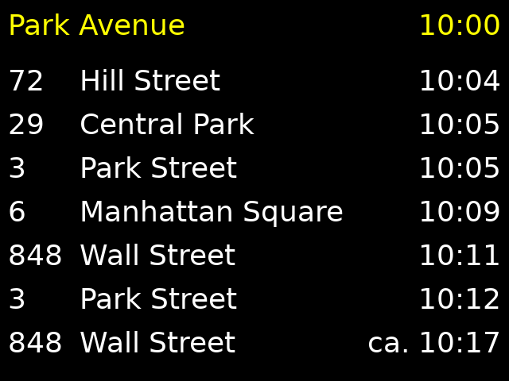

3.4.1. Introduction to larger software¶
There are two ways of constructing a software design. One way is to make it so simple that there are obviously no deficiencies. And the other way is to make it so complicated that there are no obvious deficiencies.
—C.A.R. Hoare
We’ve had and solved a few different smaller software problems. You may wonder, what about real life, professional, large scale software problems. This chapter discusses this in more detail.
3.4.1.1. Overview¶
Though not always obvious, the typical flow for software development, and indeed much of engineering in general is:
- Capturing the requirements - understanding what needs to be built
- Capturing the engineering specification - understanding how to build what needs to be built; this typically breaks down the problem into components or sub-tasks
- Implementing each component and testing them individually
- Integrating all components to the final software and testing it
- Quality assurance, or validation - checking that the end product meets the original requirements
Depending on the software, problem at hand and lots of other factors, all these steps can be followed at e.g. two-week cycles, or multi-year cycles, or anything in between. The terminology also often differs between companies and kinds of software. For example, a web site may have a new request from a user to add new functionality to the website; this may require getting more information from the customer, planning the technical changes to the web site and implementing these, and finally checking whether the result works as intended both from internal and user’s point of view. On the other hand, e.g. developing software for a space shuttle may require several years to capture the requirements before planning, implementing, integrating and testing the software.
In this chapter we’ll build software from scratch to address a very specific use case: we imagine we’re a software company with a contract from a local transport company to improve the public transport bus service. The company has fitted GPS transmitters to the local buses and would like to improve the experience of the passengers waiting for a bus by installing screens on the bus stops which would show which buses are expected to soon arrive at the bus stop, and when.
This is a problem that could potentially require a fairly large amount of software; in our case, as we’ll cut some corners, we’ll end up with relatively little code. However, it’s enough to introduce the general steps of software development and software design.
Specifically, we’ll start with having the requirements well captured in advance, which often is not the case. We’ll go through breaking down the problem space, and discuss two different ways to actually implement such a software. We’ll end up with two implementations for this problem, which sum up to a total of around 600 lines of C++ and 200 lines of Python. The reader will get to write these two implementations as well. The author used about seven hours for the two implementations; the reader should ideally be able to finish them in 40 hours.
3.4.1.2. Requirements¶
The following is the requirement specification for the software. It’s written by our customer. It describes what the expected output of the software is, what the inputs to the software are, and what external constraints the software has.
Requirements
General
The software will need to output a table on a 640x480 screen displaying the buses arriving at the bus stop where the screen is installed, to the best of the knowledge of the software, as specified by its inputs.
The software will run on a computer directly connected to the screen.
The output table will need to have the following rows:
- First row must include the bus stop name as well as the current time
- Rows 2-8 must include the bus route number, the final destination of the bus route, and the expected arrival time of the bus
The expected arrival time must either be derived from the bus schedule (if GPS data is not available) or from the GPS data (if available).
If no GPS data is available, the arrival time must reflect this by prefixing the time with text “ca.”.
The bus schedule data must be used directly when displaying the bus arrival time.
The times must be displayed in 24 hour format and contain the hour and the minute.
The routes displayed must be sorted such that the one arriving soonest must be displayed at the top.
The first row text must be in yellow while the other rows must be in white. The background colour must be white.
The table must not have any borders.
This is an example ASCII representation of the table:
Park Avenue 10:00
72 Hill Street 10:04
29 Central Park 10:05
3 Park Street 10:05
6 Manhattan Square 10:09
848 Wall Street 10:11
3 Park Street 10:12
848 Wall Street ca. 10:17
This is an example image representation of the final screen:
The font to use is Deja Vu Sans.
Inputs
The system will have the following inputs: bus schedule, historical GPS data from previous bus runs, current GPS data from current buses and current bus stop name.
The bus schedule is a file available at “sched.txt”. The file is an ASCII text file with several, unspecified number of lines. Each line has data in the following format:
<integer representing the route number> <integer representing the start number> <integer representing the hour of the bus arriving at the stop> <integer representing the minute of the bus arriving at the stop>
e.g.:
3 1 5 6
3 2 5 16
[...]
In other words, each line has four integers separated by spaces. The first integer identifies the route. The second is a counter for the bus for this route for each day (start number). The third and fourth integers represent the time the bus is expected to arrive at the stop.
The schedule is the same for all days of the week.
The historical GPS data is a file available at “gps.txt”. The file is an ASCII text file with several, unspecified number of lines. Each line has data in the following format:
<integer representing the route number> <floating point number representing the time it took for the bus to reach the bus stop from this position> <the distance from the measurement position to the bus stop on the X axis (west-east axis) in meters> <the distance from the measurement position to the bus stop on the Y axis (north-south axis) in meters>
e.g.:
3 10.8713536724 -4003.3505052 -3998.10233076
3 10.7045996484 -3943.15506994 -3938.06461792
[...]
In other words, each line has four numbers separated by spaces. The first integer identifies the route. The second is the time it took for the bus to reach the bus stop at the time the data was collected. The third and fourth are the position coordinates relative to the bus stop. They’ve been normalised such that the unit is in meters as opposed to degrees.
The current bus GPS data is a file available at “gps_raw.txt”. The file is an ASCII text file with several, unspecified number of lines. Each line has data in the following format:
<integer representing the route number> <integer representing the start number> <the distance from the measurement position to the bus stop on the X axis (west-east axis) in meters> <the distance from the measurement position to the bus stop on the Y axis (north-south axis) in meters> <an integer representing whether the bus has already passed this bus stop; 0 meaning no, 2 meaning yes> [other possible data to be ignored]
e.g.:
72 21 -1534.20182433 1469.51178823 0 3 5.82836846952
3 30 -200.376943403 -205.032704345 2 -4 -0.345019886326
[...]
In other words, each line has at least five numbers separated by spaces. Each line could have more numbers which are not to be used. The first number identifies the route. The second identifies the start number as is used in the schedule file. The third and fourth provide the relative position of the bus to the bus stop as is used in the historical GPS file. The fifth identifies whether the bus has already passed the bus stop.
The current bus GPS data is updated automatically by another process running on the system approximately every 10 seconds. The program must take into account that the current GPS data file may be empty because it’s being rewritten. In this case the contents of the previous GPS file must be used.
There may not be GPS data available for all buses approaching the bus stop.
The current bus stop name will be passed to the program as a command line parameter. The program will be started using: ‘./bus <bus stop name>’; e.g. ‘./bus “Park Avenue”’
The algorithm to identify the time to reach the bus stop from GPS data must work as follows:
- The time to reach the bus stop is assumed to be the average time of all the points in the historical data within 100 meters of the current bus position for the route of the bus.
If a bus is marked as having already passed the bus stop in the GPS data, it must not be shown in the final table.
The mapping between the route numbers and the final destinations is the following:
- 3 - Park Street
- 6 - Manhattan Square
- 29 - Central Park
- 72 - Hill Street
- 848 - Wall Street
Constraints
The program will run on a Linux OS on an embedded system with 1GB of RAM and a 800 MHz CPU. The program can store several megabytes of data in the current working directory, for storing any intermediate files. The current working directory will have the font file available as “DejaVuSans.ttf”.
It will have access to the files described above using normal file operations.
It has access to a screen with resolution 640x480, 16 bits of colour.
The screen is available through the fbdev Linux subsystem.
The program will need access to current date and time. These are available using normal OS time functions.
Sounds fun, doesn’t it?
We won’t actually have the hardware to try this out so we’ll have to simulate. We’ll have a few input files to work with; for output we’ll have to write something that displays the view matching the requirements on our development computer, and not need to worry about the actual hardware.
You can download the necessary input files for testing here:
You can download the font file from the DejaVu fonts web page. You may already have the font available somewhere on your computer.